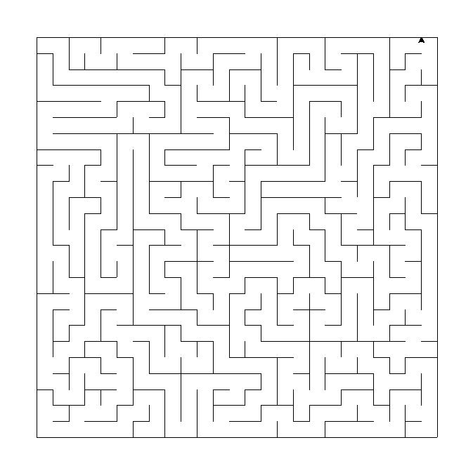

Results:
Recursive bakctracker algorithm maze

- Maze type: perfect maze
- Charasteristics: low branching factor, many long corridors
- Method: passage carving, depth-first search
- Maze execution time: {{ backtracker_execution_time }} ms
- Impasses: {{backtracker_impasses}} pcs
Kruskal's algorithm

- Maze type: perfect maze
- Charasteristics: regular patterns which are fairly easy to solve
- Method: passage carving, a minimal spanning tree
- Maze execution time: {{ kruskal_execution_time }} ms
- Impasses: {{kruskal_impasses}} pcs
Recursive division algorithm
- Maze type: perfect maze
- Charasteristics: mazes have long straight walls crossing their space
- Method: dividing empty space with walls with one opening
- Maze execution time: {{ rec_division_execution_time }} ms
- Impasses: {{rec_division_impasses}} pcs